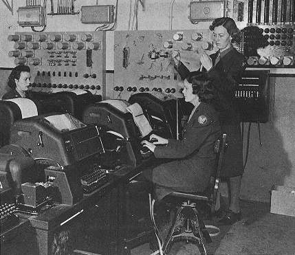
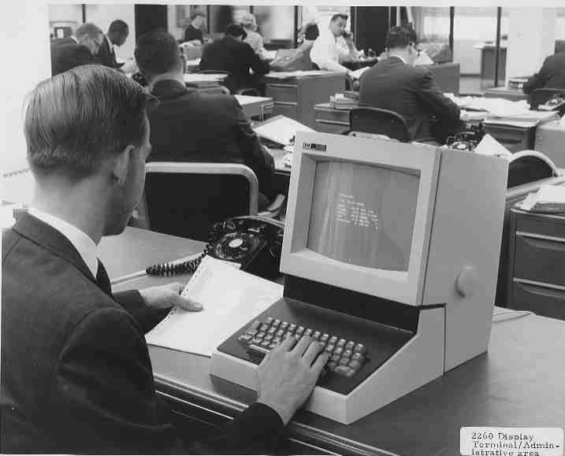

Терминалы
Основы
Давайте для начала разберемся, что такое Terminal, Shell, Console, чем отличается Terminal Emulator от обычного Terminal и почему он так назван. Информации об этом написано уже довольно много, поэтому ничего нового вы здесь не услышите. Почти вся информация здесь была взята из интернета, ссылки приведу в конце статьи. Кто уже знает, что все эти вещи обозначают, может смело пропускать данный раздел.
Teletype
Было время, когда для работы с компьютерами использовали устройства под названием телетайп (teletype или сокращенно TTY). Телетайп — электромеханическая печатная машина, изначально разрабатывалась для других целей, а именно для передачи текстовых сообщений между двумя абонентами на дальние расстояния по электрическому каналу связи. К одному компьютеру можно было подключить несколько телетайпов, благодаря чему, несколько пользователей могли одновременно работать с одним компьютером не мешая друг другу.
Terminal
В терминале (terminal) вместо электрической печатной машинки используется дисплей - электронное устройство, предназначенное для визуального отображения информации. Вначале терминалы были текстовые. В них использовались текстовые дисплеи, которые позволяли выводить только текстовую информацию.
Console
Один из нескольких терминалов, подключенных к компьютеру, назначается в качестве консоли (console). Это особый терминал на который выводятся сообщения компьютера во время его загрузки. С консоли производится первоначальная настройка компьютера.
Shell
Если телетайп, терминал и консоль это физические устройства, то shell это компьютерная программа.
Это не название какой то конкретной программа, а любая программа которая:
- имеет интерфейс командной строки;
- имеет встроенный в эту программу набор высокоуровневых команд управления компьютером;
- позволяет пользователю выполнять эти встроенные команды и запускать другие программы.
Существует большое количество различных shell'ов.
Самым распространенным сегодня является bash.
Конечно же, и терминалы, и консоли не могли не найти своего отражения в современности. Поэтому далее мы рассмотрим такие вещи, как Terminal Emulator и Virtual Console.
Графические дисплеи
Появление графических дисплеев дало возможность выводить на компьютер не только текстовую информацию, но любые изображения. Однако делать это через те же интерфейсы, что и у текстовых дисплеев невозможно. Появились специальные интерфейсы, для графических дисплеев. Они содержали гораздо больше проводов и не позволяли организовывать передачу на большое расстояние.
Клавиатура и графический дисплей стали отдельными устройствами, каждый со своим специфическим интерфейсом. Текстовые терминалы остались только для удаленных подключений к компьютеру. Благодаря графическим дисплеям появились не только пользовательские графические программы, но и графические многооконные оболочки для операционных систем типа X Window System. Чтобы иметь возможность работать с программами написанными для работы в командной строке shell и не выходить для этого из графической оболочки, были разработаны программы названные эмуляторами терминала (Terminal Emulator).Terminal Emulator
Terminal Emulator это графическая программа эмулирующая экран текстового терминала. Эта программа в принципе могла бы включать в себя весь функционал shell, но во всех??? известных эмуляторах она делает только две вещи: - принимает ввод с клавиатуры и отсылает его какой либо из shell, - принимает вывод из shell и отображает его в окне эмулятора.
Примеры эмуляторов терминала: gnome-terminal, xterm, konsole.Shell и Terminal Emulator это не одно и тоже. Terminal Emulator — GUI приложение, то есть окно в X Window System. Shell — это command line interpreter, то есть просто исполнитель команд, он не имеет графической оболочки. Если говорить совсем правильно, вы не запускаете Bash, вы запускаете Terminal Emulator, который запускает внутри себя Bash. Terminal Emulator и Bash — абсолютно 2 различные программы. Первая отвечает исключительно за ввод/вывод, вторая — за обработку команд.
Virtual Terminal и Virtual Console
Если вы запустите компьютер с операционной системой Linux, без графической оболочки то, через некоторое время вы окажитесь в командной строке shell. Если вы нажмите Ctrl+Alt+Fn, где n, цифра от 1 до N (обычно до 6), то вы попадете в другой shell, закрепленный за другим терминалом. Так за одной парой дисплей + клавиатура, может быть закреплено несколько виртуальных терминалов, каждый со своим shell'ом. Цифра n - номер виртуального терминала. Первый??? Virtual Terminal (виртуальный терминал) будет Virtual Console (виртуальной консолью). Именно в него направляется весь вывод во время загрузки компьютера.
TTY устройства
Все внешние устройства подключенные к компьютерам с unix-подобными операционными системами делятся на несколько типов и каждому устройству назначается т.н. файл устройства в каталоге /dev. Устройствам типа терминал (физическим, виртуальным или эмуляторам терминала) тоже назначается свой файл устройства начинаются со слова tty и заканчиваются номером устройства (/dev/tty1, /dev/tty2, ...). Хотя телетайпы вы вряд ли уже найдете, но сокращение TTY дошло до наших дней.
Каждое TTY устройство имеет два компонента:
- Драйвер устройства. Он отвечает за доставку ввода с клавиатуры в программу и за отображение вывода программы на экран.
- TTY Line Discipline (рус. — дисциплина линии). Дисциплина линии — это интерфейс доступа к драйверу, который, однако, привносит немало логики в TTY устройство. Можно сказать, что дисциплина линии проксирует вызовы к драйверу. Какова зона ответственности данного компонента, мы будем узнавать по ходу статьи.
Строение TTY устройства:

Существует 3 типа TTY устройств:
- Console device — обеспечивает работу Virtual Console. Ввод и вывод данного устройства управляется полностью ядром.
- PTY device (псевдотерминал) — обеспечивают работу терминала в оконном интерфейсе. Ввод и вывод данного устройства управляется эмулятором терминала, который работает в пользовательском пространстве.
- Serial device — общается напрямую с железом. Обычно не используется напрямую, а существует как самый нижний уровень в организации архитектуры терминального устройства.
В данной статье мы будем говорить именно о втором типе TTY устройств — псевдотерминалах.